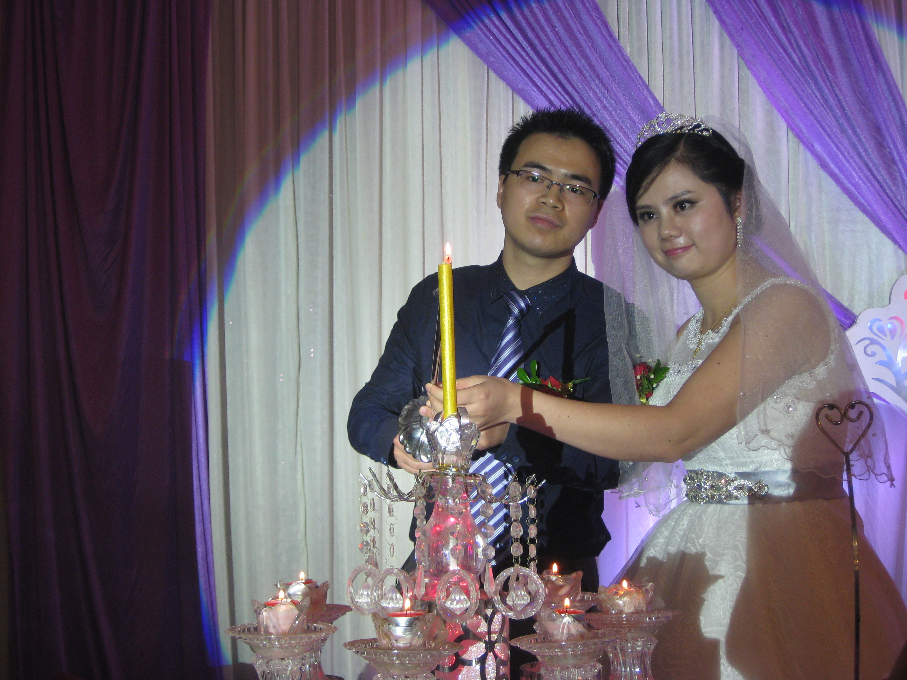
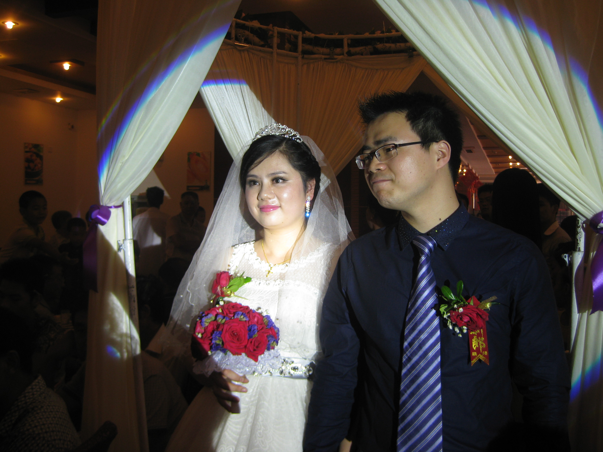
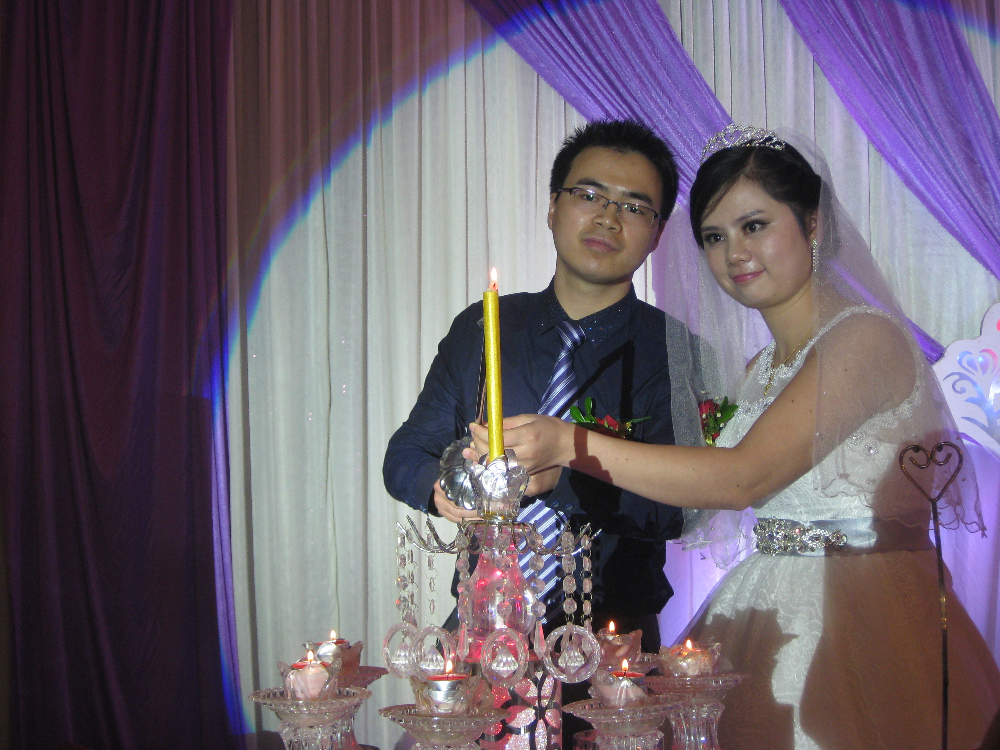
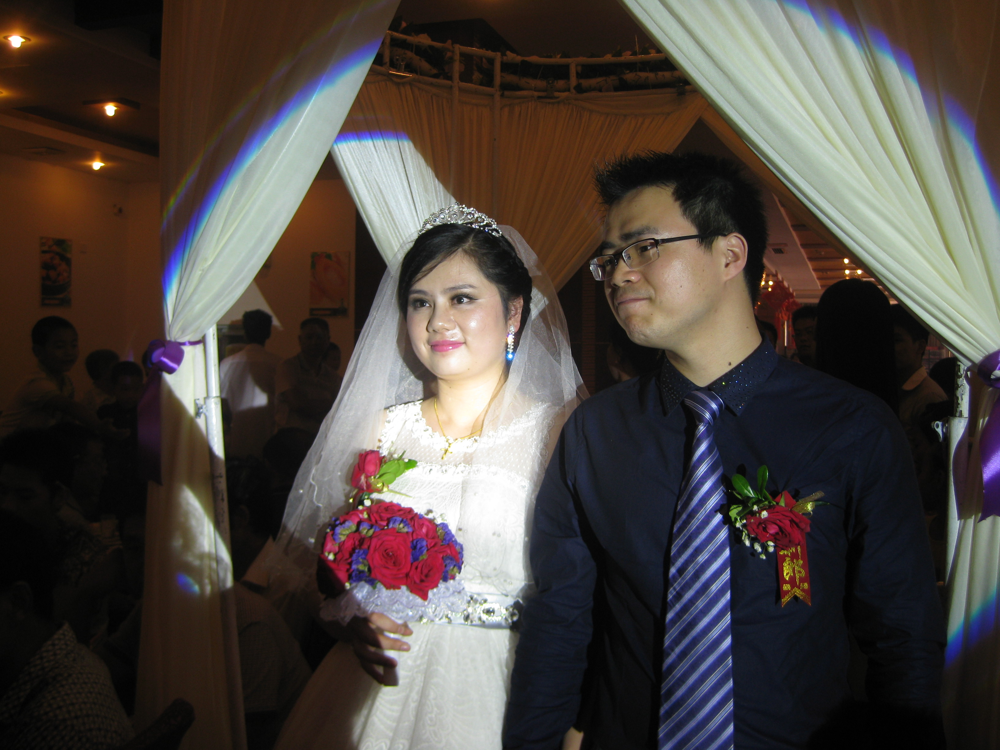
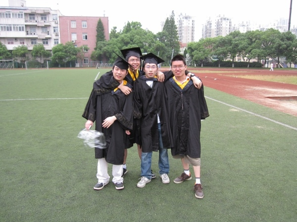
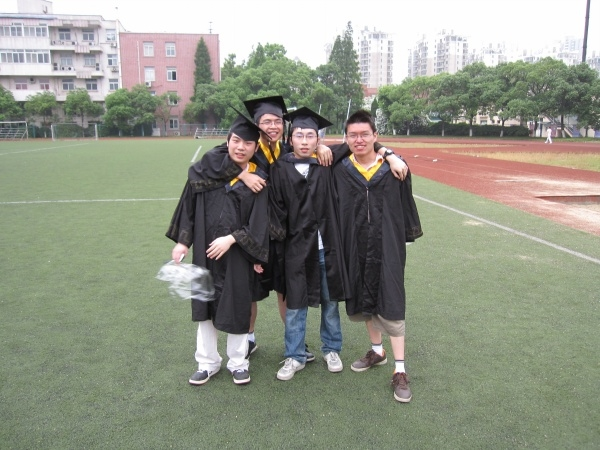

+ 全部展开
我们有了孩子后，总想有个自己的家，有了房子才算个家
买房压力大，装修房子累，但目标明确，想着一家人的生活就很开心
你辛苦地怀胎十月，我们的孩子出生了
你可能不知道当时在产房外边我是多么地紧张
婚礼仪式上我竟然没有紧张，觉得一切都是自然的，发自内心的表达，开心得忘了紧张
虽然天公不作美，上午下起了大雨
但我们心情都是美美的，累并快乐着
我们俩虽然都是江西人，但我家在江西东北角，你家在江西西南角，相距甚远，因此在两家都办一次婚礼
趁着放假，和妈妈、舅舅、姨妈一起去你家，订婚
摆酒宴，会亲朋
是的，我们先领了证，再订婚，结婚
好日子，阳光明媚
下午，于上海徐汇区婚姻登记处，经过一系列流程之后，领到结婚证
晚上，于华山路某法国餐厅庆祝
趁着五一放假，刚领了第一个月的工资
为你买了一个求婚钻戒
不过我们都直接而有些害羞，没有搞个浪漫的求婚仪式
今天，我再次毕业了，真的结束了求学生涯
Bye, SJTU; Hello, Tencent.
你、我、pengtao、xiaozi四个从交大出发，逛到徐家汇，进而转战陆家嘴黄浦江边，人很多，观看跨年灯光特效和烟花
结束返回时，陆家嘴西路上遇小型演唱会，虽半夜风大天冷，但大家兴致很高
排长队，等出租车，凌晨3点左右才上车，到交大已4点
爸爸、大哥、我，一起去你家
我们俩的事开始成为两个家庭的事
应你爸妈的要求，内心忐忑地去你家
我明白，只有你爸妈见到我真人，替你把把关，他们才会放心
结果，出人意料地好，你爸妈、弟弟、以及亲戚都很喜欢我
毕业快乐！
可惜，我没能来和你拍张照
今天，拍毕业照
我的大学，就这样结束了
那时，你爸妈还不知道你谈恋爱
你怂恿liaoliang老师去婺源游玩，这样你以陪同老师的名义再次来我家，哈哈
我爸在得知我找女友后，表示希望我带回家看一下
然后，你在并未得到你父母同意的情况下，“偷偷”地去了我家，同行的还有zhaguoying及其男友
你来上海
我们玩了很多地方
这天晚上，我们在QQ上一直聊到凌晨3点左右，相互表达心意，确立恋爱关系！
这天，我在南昌，去看在江西财大读书的好朋友zhaguoying，zhaguoying叫了她的好朋友-你-一起吃午饭
之后，大家又在一起吃了晚饭，席间，你把一个杂粮馒头掰成两半，分了我一半
从此之后，茫茫人海，我们之间紧紧联系在一起
这一天，江西宜春上高，某村庄，一个漂亮的女孩出生了
这一天，江西婺源，某山村，一个帅气的男孩出生了
 





 
